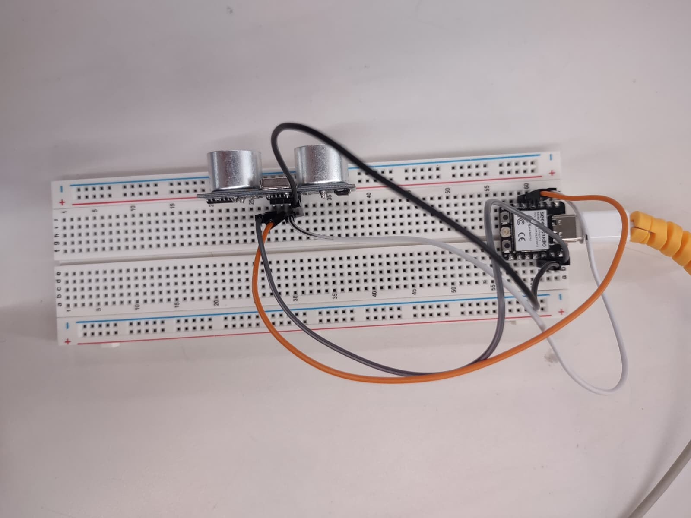
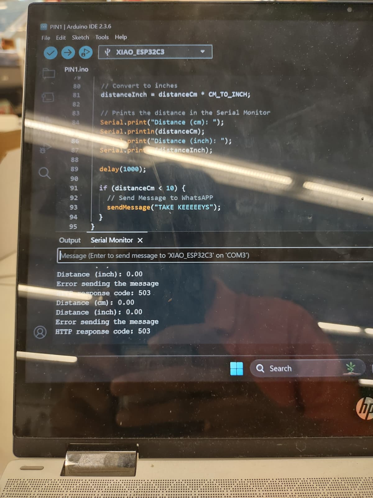
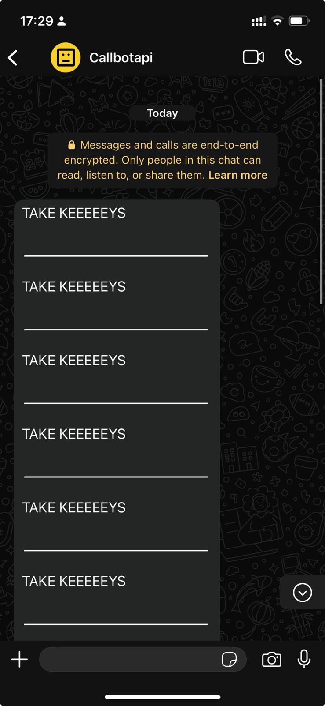

Part 1:Network1
This week we were tasked with using networking or internet for our project.
For this project, I wanted to explore how I could use an API to solve a small but very real problem in my daily life. I had heard about APIs from some friends who were into computer science and had played around with ESP32 boards, often connecting them to all sorts of gadgets. I didn’t fully understand what an API did, but I was curious. The idea that you could send data or trigger actions between different platforms using just a bit of code fascinated me.
I tend to forget my keys—a lot more often than I’d like to admit. It’s one of those simple things that ends up wasting time and causing stress. So I thought, what if I could build something that would remind me the moment I was about to forget them?
After some searching, I came across CallMeBot, an API that lets you send WhatsApp messages with just a URL and a few parameters. It sounded perfect—easy enough to get started with, but still exciting to try out. I paired it with an ESP32 I already had and began brainstorming how I could turn that combination into a kind of “smart reminder” system. The goal was simple: if I left without my keys, the device would send me a message that made sure I didn’t keep repeating the same mistake.

Project Process
For this project, I started by choosing the right hardware: an ESP32 development board, a pushbutton switch, some jumper wires, and a breadboard. I picked the ESP32 because it has built-in Wi-Fi, which was important for connecting to the CallMeBot API over the internet without needing extra parts.
Wiring
The wiring was pretty straightforward. One side of the pushbutton connected to GPIO 4 on the ESP32, and the other side went to ground through a 10kΩ pull-down resistor. This setup made sure the ESP32 could tell when the button was pressed or not. The whole circuit was powered using a USB cable plugged into a computer or a power supply. The pushbutton acted like a simple sensor to check if I had picked up my keys or not.
Challenges
During the project, I ran into a few technical challenges:
- Wi-Fi Connection: Sometimes the ESP32 struggled to stay connected to Wi-Fi, especially when the signal was weak. I had to add some code to make it try reconnecting automatically and use LED indicators to show the connection status.
- API Communication: At first, sending messages through the CallMeBot API didn’t work because the URLs weren’t formatted correctly, and some required details were missing. I learned to check the HTTP responses carefully to fix these issues.
- Multiple Messages: Without handling the button input properly, the system would sometimes send many messages instead of just one. To fix this, I added a delay in the code to stop it from sending reminders too often.
- Power Issues: Using USB power from a laptop was sometimes unreliable, causing the ESP32 to reset unexpectedly. Switching to a stable external power supply solved this problem.
Code Overview
I wrote the program using the Arduino IDE with libraries compatible with the ESP32. The code connects the ESP32 to Wi-Fi, monitors the pushbutton state, and sends a WhatsApp message through the CallMeBot API if the button shows the keys weren’t picked up. I also included features to prevent repeated messages and to debounce the button input for more reliable operation.
#include
#include
#include
// Ultrasonic Sensor Pins
const int trigPin = 10;
const int echoPin = 9;
// Sound speed in cm/uS
#define SOUND_SPEED 0.034
#define MAX_DISTANCE 400 // Max reliable measurement (cm)
#define TIMEOUT 10000 // Microseconds timeout
// WiFi Credentials
const char* ssid = "MAKERSPACE";
const char* password = "12345678";
// WhatsApp API Settings
String phoneNumber = "+905455292528";
String apiKey = "5664559";
// Variables
float distanceCm = 0;
unsigned long lastSentTime = 0;
const unsigned long messageCooldown = 60000; // 1 minute cooldown
void sendMessage(String message) {
if (WiFi.status() != WL_CONNECTED) {
Serial.println("WiFi not connected!");
WiFi.reconnect();
return;
}
String url = "https://api.callmebot.com/whatsapp.php?phone=" + phoneNumber +
"&apikey=" + apiKey + "&text=" + urlEncode(message);
HTTPClient http;
http.begin(url);
http.addHeader("Content-Type", "application/x-www-form-urlencoded");
int httpResponseCode = http.POST(url);
if (httpResponseCode == 200) {
Serial.println("Message sent successfully");
lastSentTime = millis();
} else {
Serial.print("Error sending message. HTTP Code: ");
Serial.println(httpResponseCode);
}
http.end();
}
float getDistance() {
digitalWrite(trigPin, LOW);
delayMicroseconds(2);
digitalWrite(trigPin, HIGH);
delayMicroseconds(10);
digitalWrite(trigPin, LOW);
long duration = pulseIn(echoPin, HIGH, TIMEOUT);
if (duration == 0) {
Serial.println("Warning: Sensor timeout - check wiring");
return -1; // Error value
}
float distance = duration * SOUND_SPEED / 2;
// Validate reading
if (distance <= 0 || distance > MAX_DISTANCE) {
Serial.println("Warning: Invalid distance reading");
return -1;
}
return distance;
}
void setup() {
Serial.begin(115200);
pinMode(trigPin, OUTPUT);
pinMode(echoPin, INPUT);
WiFi.begin(ssid, password);
Serial.print("Connecting to WiFi");
while (WiFi.status() != WL_CONNECTED) {
delay(500);
Serial.print(".");
}
Serial.println("\nConnected! IP: " + WiFi.localIP().toString());
}
void loop() {
distanceCm = getDistance();
if (distanceCm > 0) { // Only use valid readings
Serial.print("Distance: ");
Serial.print(distanceCm);
Serial.println(" cm");
if (distanceCm < 10 && (millis() - lastSentTime) > messageCooldown) {
Serial.println("Object too close! Sending alert...");
sendMessage("⚠️ WARNING: Object detected at " + String(distanceCm) + " cm");
}
}
delay(1000);
}  
Possible Improvements
Although the project was successful in sending reminders, there are several improvements that could enhance its functionality and reliability.
- More Accurate Sensing: Instead of using a simple pushbutton to simulate whether the keys were picked up, a more sophisticated sensor such as an RFID reader or a proximity sensor could be used. This would allow the device to detect the actual presence or absence of the keys more accurately.
- Power Efficiency: The current setup relies on USB power, which limits portability. Incorporating a rechargeable battery with power management features would make the device more practical for everyday use.
- Expanded Notifications: Beyond WhatsApp messages, the system could be extended to send notifications via SMS, email, or even push notifications through a dedicated mobile app, increasing flexibility and user convenience.
- Improved User Interface: Adding a small display or LED indicators to show the device’s status (e.g., connected to Wi-Fi, message sent) would provide clearer feedback and make troubleshooting easier.
- Enhanced Security: Implementing secure API authentication methods and encrypting communication could help protect user data and prevent unauthorized message sending.
- Automatic Reset and Recovery: The device could be programmed to automatically reset or reconnect in case of Wi-Fi disconnection or power interruptions, increasing overall robustness.